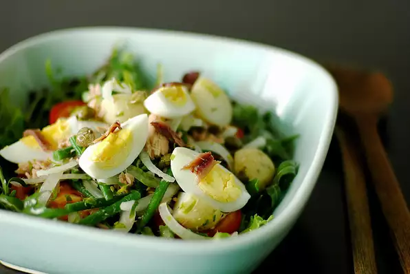

Salade Niçoise

Description
This French-inspired salad makes a delightful summer dish. You can dress it up with other garden vegetables like
corn, blanched broccoli, cauliflower and asparagus! 4 servings.
Ingredients
- ½ pound new potatoes, quartered
- ¼ cup chopped fresh parsley
- ¼ cup pitted nicoise olives
- ½ onion, thinly sliced
- 1 (5 ounce) can tuna
- ⅓ pound fresh green beans - rinsed, trimmed and blanched
- ½ pound mixed salad greens
- 1 cup lemon vinaigrette
- 3 hard-cooked eggs, quartered
- 3 roma (plum) tomatoes, thinly sliced
- 1 tablespoon capers
- 4 anchovy filets
Steps
- Bring a large pot of salted water to a boil. Add potatoes, and cook until tender but still firm, about 15
minutes. Drain and cool.
- In a large bowl, combine the potatoes, parsley, olives, onion, tuna and green beans. Refrigerate for 2 to 4
hours.
- In large bowl, toss greens with vinaigrette and top with chilled potato mixture. Garnish with eggs, tomatoes,
capers and anchovies.